Exercice de la semaine 6 - Cours théorique
Vous devez insérer le disque SSD dans le tiroir de l'ordinateur du laboratoire.
Dans le menu Ventoy, vous devez prendre Win11.vhd.
Il s'agit d'une image d'une unité de stockage qui a Windows 11.
Ventoy est en mesure d'exécuter un système d'exploitation à partir d'un fichier VHD. Le fichier VHD est considéré comme un disque virtuel.
Avant de débuter, il faut supprimer le dossier c:\execmd6 s'il existe dans l'ordinateur.
L'ordinateur du laboratoire n'a pas accès à internet.
Utilisez votre portable pour accéder aux notes de cours.
L'invite de commande se retrouve dans le menu Démarrer.
Pour y accéder rapidement, il est possible d'inscrire cmd à partir de l'utilitaire Exécuter.
Effectuez Logo Windows + R pour avoir accès à l'utilitaire.
![]()
La fenêtre de l'invite de commandes sera comme celle-ci dessous.

Il est possible de faire les exercices à la maison.
Le dossier de travail initial sera différent.
Le dossier de départ est normalement le profil de l'utilisateur si l'invite est exécuté en mode non administrateur. Soit le dossier contenu dans la variable %userprofile%.
En mode administrateur, le dossier de départ est normalement c:\windows\system32.
1. Première série
Un exercice est dépendant du numéro précédant.
Il faut absolument faire correctement les numéros dans l'ordre.
Regardez la réponse pour vérifier que le dossier de travail est identique avant de poursuivre au prochain numéro.
Numéro 1.1
Changez le dossier de travail pour C:\Windows.
Utilisez la notation absolue.
Réponse
La commande est : cd c:\windows
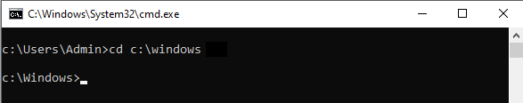Numéro 1.2
Changez le dossier de travail pour C:\Windows\System32.
Utilisez la notation relative.
Réponse
La commande est : cd system32
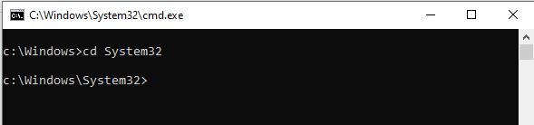Numéro 1.3
Changez le dossier de travail pour C:\Windows.
Utilisez la notation relative.
Il faut remonter d'un niveau.
Réponse
La commande est : cd ..
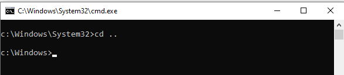Numéro 1.4
Changez le dossier de travail pour C:\Windows\syswow64\drivers.
Utilisez la notation relative pour changer de niveau une commande à la fois.
Vous devez utiliser 2 fois la commande cd
Réponse
La commande #1 est : cd syswow64
La commande #2 est : cd drivers
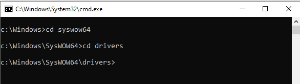Numéro 1.5
Changez le dossier de travail pour C:\.
Utilisez la notation absolue.
Réponse
La commande est : cd c:\
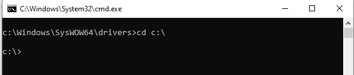Numéro 1.6
Changez le dossier de travail pour C:\windows\syswow64\drivers.
Utilisez la notation relative pour changer de niveau avec une seule commande
Vous devez utiliser 1 fois la commande cd
Réponse
La commande est : cd windows\syswow64\drivers
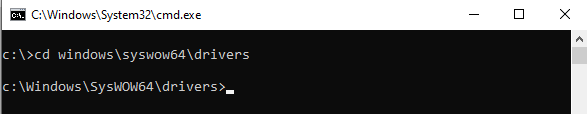Numéro 1.7
Changez le dossier de travail pour C:\windows\system32.
Utilisez la notation relative pour changer de niveau avec une seule commande
Vous devez utiliser 1 fois la commande cd
Il faut remonter de 2 niveaux.
Réponse
La commande est : cd ....\system32
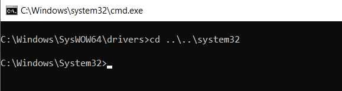2. Deuxième série
Pour les exercices ci-dessous, vous pouvez ouvrir l'Explorateur de fichiers pour voir la résultante.
Numéro 2.1
Créez le dossier c:\execmd6.
Utilisez la notation absolue.
Réponse
La commande est : md c:\execmd6
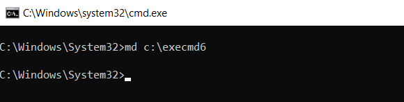Numéro 2.2
Copiez le fichier c:\windows\system32\notepad.exe dans le dossier c:\execmd6.
Utilisez la notation absolue pour la source et la destination.
Réponse
La commande est : copy c:\Windows\System32\notepad.exe c:\execmd6\notepad.exe
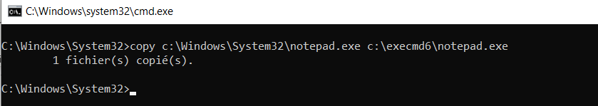Numéro 2.3
Copiez le fichier c:\windows\system32\mmc.exe dans le dossier c:\execmd6.
Utilisez la notation relative pour la source et la notation absolue pour la destination.
Réponse
La commande est : copy mmc.exe c:\execmd6\mmc.exe
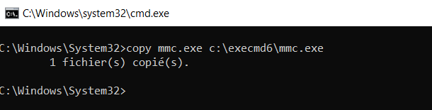Numéro 2.4
Changez le dossier de travail pour c:\execmd6 en utilisant la notation absolue.
Ensuite, affichez le contenu du dossier.
Vous devez faire 2 commandes.
Réponse
La commande #1 est : cd c:\execmd6
La commande #2 est : dir
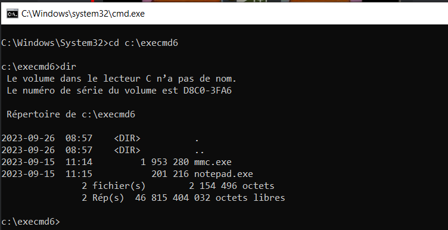Numéro 2.5
Créez le dossier c:\execmd6\fmv.
Utilisez la notation relative.
Réponse
La commande est : md fmv
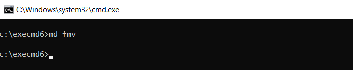Numéro 2.6
Déplacez le fichier c:\execmd6\mmc.exe dans le dossier c:\execmd6\fmv.
Utilisez la notation absolue pour la source et la destination.
Réponse
La commande est : move c:\execmd6\mmc.exe c:\execmd6\fmv\mmc.exe
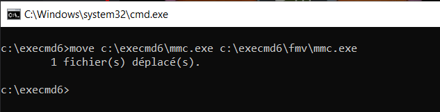Numéro 2.7
Déplacez le fichier c:\execmd6\notepad.exe dans le dossier c:\execmd6\fmv.
Utilisez la notation relative pour la source et la notation absolue pour la destination.
Réponse
La commande est : move notepad.exe c:\execmd6\fmv\notepad.exe
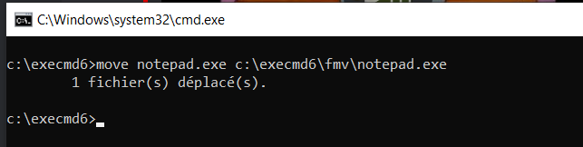Numéro 2.8
Changez le dossier de travail pour c:\execmd6\fmv en utilisant la notation relative.
Ensuite, affichez le contenu du dossier.
Vous devez faire 2 commandes.
Réponse
La commande #1 est : cd fmv
La commande #2 est : dir
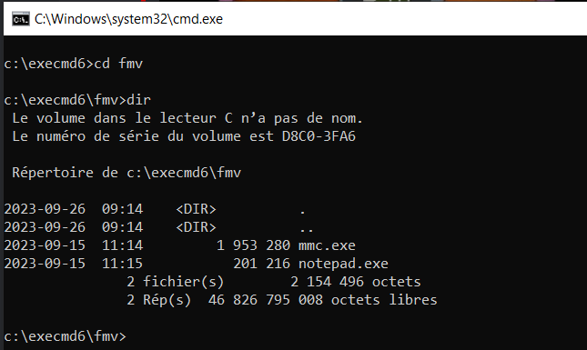Numéro 2.9
Renommez le fichier c:\execmd6\fmv\notepad.exe pour bloc-note.exe.
Utilisez la notation relative.
Réponse
La commande est : ren notepad.exe bloc-note.exe
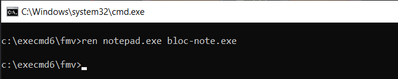Numéro 2.10
Affichez le contenu du dossier c:\execmd6\fmv.
Réponse
La commande est : dir
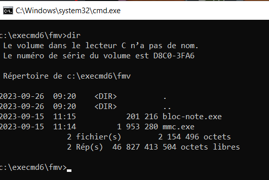Numéro 2.11
Supprimez le fichier c:\execmd6\fmv\mmc.exe.
Utilisez la notation relative.
Réponse
La commande est : del mmc.exe
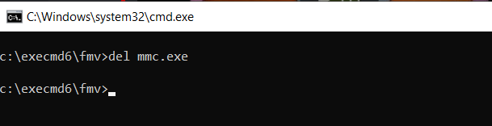Numéro 2.12
Changez le dossier de travail pour c:\execmd6 en utilisant la notation relative.
Réponse
La commande est : cd ..
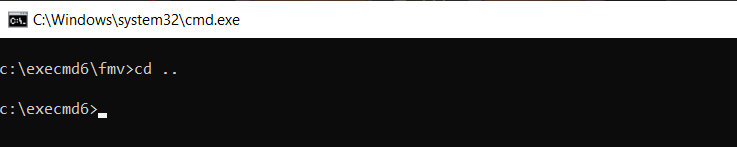Numéro 2.13
Supprimez le fichier c:\execmd6\fmv\bloc-note.exe.
Utilisez la notation absolue.
Réponse
La commande est : del c:\execmd6\fmv\bloc-note.exe
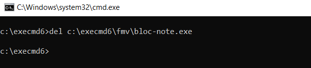Numéro 2.14
Supprimez le dossier c:\execmd6\fmv.
Utilisez la notation relative.
Réponse
La commande est : rd fmv
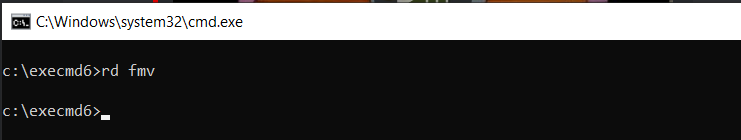Numéro 2.15
Supprimez le dossier c:\execmd6.
Utilisez la notation absolue.
Vous avez le message Le processus ne peut pas accéder au fichier car ce fichier est utilisé par un autre processus. Pourquoi ?
Réponse
Il n'est pas possible de supprimer un dossier en cours d'utilisation par le cmd.
Vous devez changer de dossier de travail. Effectuez la commande : cd c:\
La commande pour supprimer est : rd c:\execcmd6
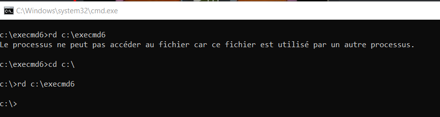